МакроСтанция
аудио-визуален пърформанс
Macrostation е аудио-визуален проект, фокусиран върху живото взаимодействие между звук и образ. Той изследва динамичната връзка между двете медии, създавайки постоянно развиващи се композиции, в които всеки елемент реагира на другия. Чрез комбиниране на дигитални медии с живо изпълнение, Macrostation усилва акта на създаване на образ и звуков експеримент, превръщайки ги в потапящо, непрекъснато променящо се изживяване.
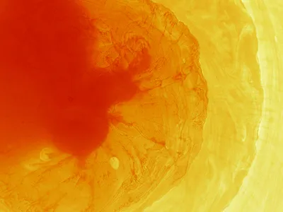
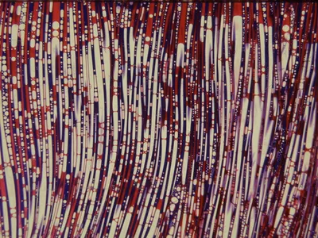
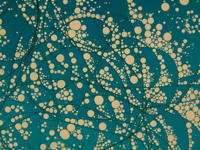
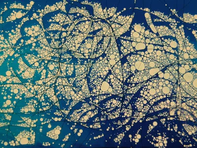
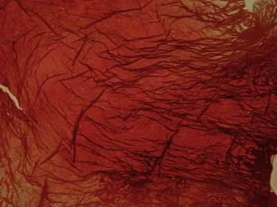
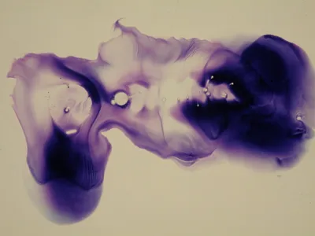
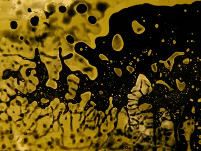
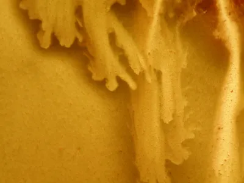
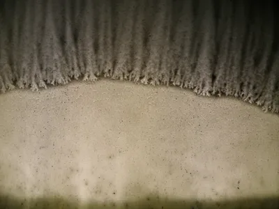
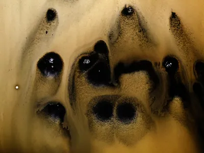
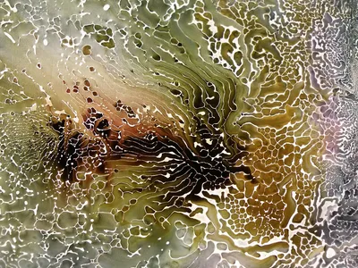
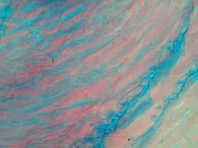
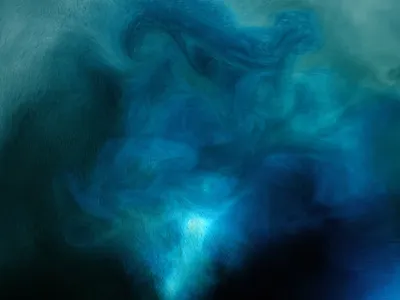
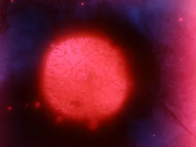
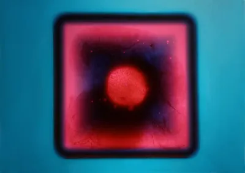
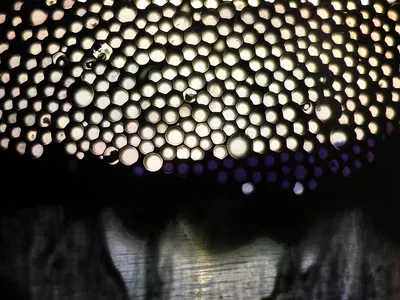
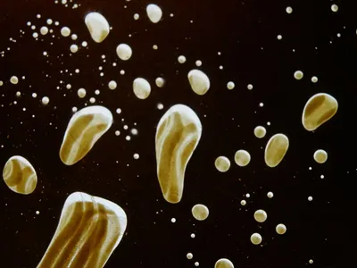
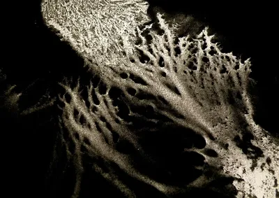
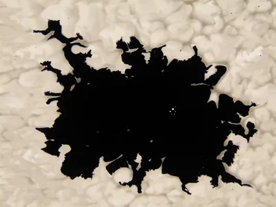
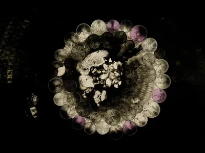
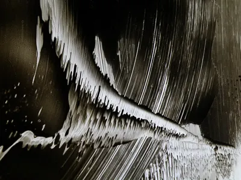
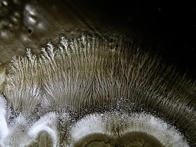
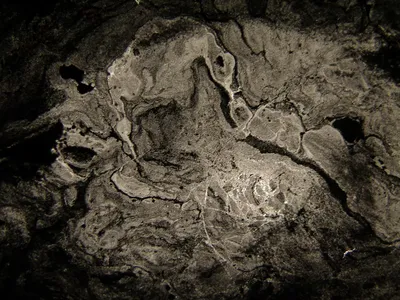